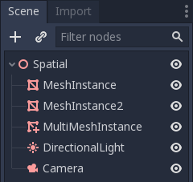
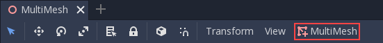
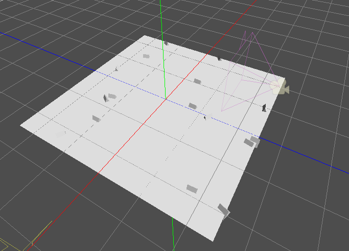

Work in progress
The content of this page was not yet updated for Godot
4.7
and may be outdated. If you know how to improve this page or you can confirm
that it's up to date, feel free to open a pull request.
Using MultiMeshInstance3D
Introduction
In a normal scenario, you would use a MeshInstance3D node to display a 3D mesh like a human model for the main character, but in some cases, you would like to create multiple instances of the same mesh in a scene. You could duplicate the same node multiple times and adjust the transforms manually. This may be a tedious process and the result may look mechanical. Also, this method is not conducive to rapid iterations. MultiMeshInstance3D is one of the possible solutions to this problem.
MultiMeshInstance3D, as the name suggests, creates multiple copies of a MeshInstance over a surface of a specific mesh. An example would be having a tree mesh populate a landscape mesh with trees of random scales and orientations.
Setting up the nodes
The basic setup requires three nodes: the MultiMeshInstance3D node and two MeshInstance3D nodes.
One node is used as the target, the surface mesh that you want to place multiple meshes on. In the tree example, this would be the landscape.
The other node is used as the source, the mesh that you want to have duplicated. In the tree case, this would be the tree itself.
In our example, we would use a Node3D node as the root node of the scene. Your scene tree would look like this:

Note
For simplicity's sake, this tutorial uses built-in primitives.
Now you have everything ready. Select the MultiMeshInstance3D node and look at the
toolbar, you should see an extra button called MultiMesh next to View.
Click it and select Populate surface in the dropdown menu. A new window titled
Populate MultiMesh will pop up.


MultiMesh settings
Below are descriptions of the options.
Target Surface
The mesh used as the target surface on which to place copies of your source mesh.
Source Mesh
The mesh you want duplicated on the target surface.
Mesh Up Axis
The axis used as the up axis of the source mesh.
Random Rotation
Randomizing the rotation around the up axis of the source mesh.
Random Tilt
Randomizing the overall rotation of the source mesh.
Random Scale
Randomizing the scale of the source mesh.
Scale
The scale of the source mesh that will be placed over the target surface.
Amount
The amount of mesh instances placed over the target surface.
Select the target surface. In the tree case, this should be the landscape node.
The source mesh should be the tree node. Adjust the other parameters
according to your preference. Press Populate and multiple copies of the
source mesh will be placed over the target mesh. If you are satisfied with the
result, you can delete the mesh instance used as the source mesh.
The end result should look like this:

To change the result, repeat the previous steps with different parameters.